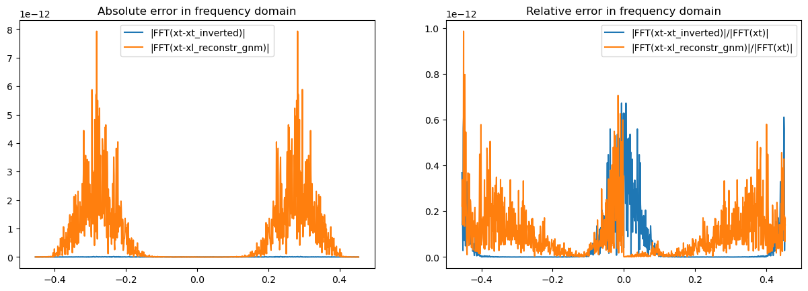
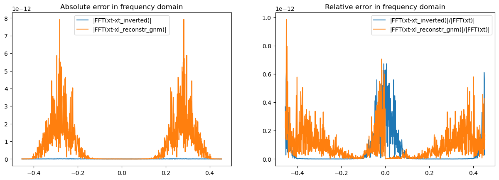
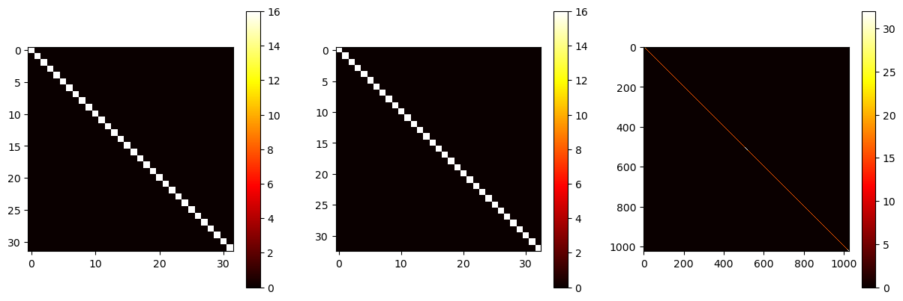

import numpy as np
from numpy.fft import fft, ifft, fftfreq
import matplotlib.pyplot as plt
def Cnm(n,m):
return np.exp((1j*np.pi/4)*(1-(-1)**(n+m)))
# Please note that here d is not used as we are taking it to be d=1, which allows us to perform analytics further
def Phi_unit(f,A,d):
B = 1.0 - 2.0 * A
''' Unitary φ-window in frequency domain, sampled at frequencies f, with parameters A and d.'''
return np.where(np.abs(f)>A+B,f*0,np.where(np.abs(f)>A,np.cos((np.pi/2)*(np.abs(f)-A)/B),f*0+1))
def gnmf(n,m,f,DT,nf,A,d):
'''Returns the Gabor atom g_{n,m}(f) in frequency domain, sampled at frequencies f, for time shift n and freq shift m.'''
DF=1/(2*DT)
return np.where(m==0,np.exp(-4j*np.pi*n*f*DT)*Phi_unit(f/DF,A,d),
np.where(m==nf,(Phi_unit(f/DF+m,A,d)+Phi_unit(f/DF-m,A,d))*np.exp(-4j*np.pi*n*f*DT),
(-1)**(m*n)*(np.conjugate(Cnm(n,m))*Phi_unit(f/DF+m,A,d)+Cnm(n,m)*Phi_unit(f/DF-m,A,d))
*np.exp(-2j*np.pi*n*f*DT)/np.sqrt(2)
))
def wdm_forward(x, nt, nf, A, d, dt):
''' Forward WDM: from time-domain signal x of length nt*nf to W of shape (nt, nf+1) '''
n_total = nt * nf
if nt % 2 != 0 or nf % 2 != 0:
raise ValueError("nt and nf must both be even.")
if x.shape[-1] != n_total:
raise ValueError(f"len(x)={x.shape[-1]} must equal nt*nf={n_total}.")
if not (0 < A < 0.5):
raise ValueError("A must be in (0, 0.5).")
# 1) Compute FFT of full signal
X_fft = fft(x) # length = n_total
# 2) Build φ-window of length=nt
dF_phi = 1.0 / (2.0 * nf * dt)
fs_full = fftfreq(n_total,dt) # length = n_total
half = nt // 2
fs_phi = np.concatenate([fs_full[:half], fs_full[-half:]]) # length = nt
phi_window = Phi_unit(fs_phi / dF_phi, A, d) * np.sqrt(2*nf) # length = nt
# 3) Prepare output array
W = np.zeros((nt, nf+1), dtype=float)
# 4) Handle m=0 separately, since they only involve half of the φ-window
block=X_fft[1:half]*phi_window[1:half]
larr=np.arange(1,half)
narr=np.arange(nt)
W[:, 0] = np.real(np.sum(np.exp(4j*np.pi*larr[None,:]*narr[:,None]/nt)*block[None,:],axis=1)
+X_fft[0]*phi_window[0]/2)/(nt*nf)
# 5) For each sub-band m=1..nf-1:
for m in range(1, nf):
block = np.concatenate([X_fft[int(m*half):int((m+1)*half)], X_fft[int((m-1)*half):int(m*half)]])
# Multiply by φ-window and IFFT
xnm_time = ifft(block * phi_window) # length = nt, complex
# Real part of conj(C)·xnm_time, scaled by √2/nf
W[:, m] = (np.sqrt(2.0) / nf) * np.real(np.conj(Cnm(np.arange(nt), m)) * xnm_time)
# 6) Handle m=nf separately, since they only involve the other half of the φ-window
block=X_fft[n_total//2-half:n_total//2]*phi_window[-half:]
larr=np.arange(n_total//2-half,n_total//2)
narr=np.arange(nt)
W[:, nf] = np.real(np.sum(np.exp(4j*np.pi*larr[None,:]*narr[:,None]/nt)*block[None,:],axis=1)
+X_fft[n_total//2]*phi_window[0]/2)/(nt*nf)
return W
def wdm_inverse(W, A, d, dt):
''' Inverse WDM: from W of shape (nt, nf+1) to time-domain signal x of length nt*nf '''
nt, nfp1 = W.shape
nf = nfp1 - 1
if nt % 2 != 0 or nf % 2 != 0:
raise ValueError("nt and nf must both be even.")
n_total = nt * nf
if not (0 < A < 0.5):
raise ValueError("A must be in (0, 0.5).")
# 1) Build φ-window (same as forward)
dF_phi = 1.0 / (2.0 * nf * dt)
fs_full = fftfreq(n_total,dt)
half = nt // 2
fs_phi = np.concatenate([fs_full[:half], fs_full[-half:]])
phi_window = Phi_unit(fs_phi / dF_phi, A, d) * np.sqrt(2*nf)
# 2) Build C(n,m) and form ylm = C · W / sqrt(2) · nf
n_idx = np.arange(nt)[:, None] # shape (nt,1)
m_idx = np.arange(nf)[None, :] # shape (1,nf)
ylm = Cnm(n_idx, m_idx) * W[:, :nf] * nf / np.sqrt(2.0)
# 3) FFT each column along axis=0
Y = np.fft.fft(ylm, axis=0) # shape (nt,nf)
# 4) Reconstruct full-spectrum X_recon of length n_total
X_recon = np.zeros(n_total, dtype=complex)
# 5) Handle m=0 separately, since they only involve half of the φ-window
narr = np.arange(nt)
larr = np.arange(1, half)
X_recon[1:half] += np.sum(W[:,0][:,None]*np.exp(-4j*np.pi*narr[:,None]*larr[None,:]/nt)
,axis=0)*(nf)*phi_window[1:half]
X_recon[0] += np.sum(W[:, 0]) * (nf) * phi_window[0]/2
# 6) For each sub-band m=1..nf-1:
for m in range(1, nf):
# Build the nt-length “block” in frequency space: Y[:,m] * φ-window
block = Y[:, m] * phi_window # length = nt
X_recon[(m-1)*half:(m+1)*half] += np.concatenate([block[half:], block[:half]])
# 7) Handle m=Nf separately, since they only involve half of the φ-window
larr = np.arange(n_total//2 - half, n_total//2)
X_recon[n_total//2-half:n_total//2] += np.sum(W[:,nf][:,None]*np.exp(-4j*np.pi*narr[:,None]*larr[None,:]/nt)
,axis=0)*(nf)*phi_window[-half:]
X_recon[n_total//2] += np.sum(W[:, nf]) * (nf) * phi_window[0]/2
# 5) IFFT back to time domain
x_time = ifft(X_recon)
return np.real(x_time)/(nf/2)
''' Parameters of the signal and WDM'''
N=int(2**10)
Nt=int(2**5)
Nf=int(N/Nt)
dt=1.1 # This number is random, to show that it works for any dt
T=dt*N
df=1/T
DT=Nf*dt
DF=1/(2*DT)
DOm=2*np.pi*DF
times=np.arange(0,N)*dt
freqs=fftfreq(N,dt)
Atry=1/3 # Necula/Cornish/pywavelet use A=1/4 but I found https://en.wikipedia.org/wiki/Meyer_wavelet with A=1/3
# whose Meyer window has an analytical expression in time domain. I believe we can extend it to A=1/4 too
dtry=1 # d is not used in the current implementation, for the reason here explained above (it allows analytics for the Meyer window)
# Precompute the Gabor atoms g_{n,m}(f) for all n,m and frequencies f, to speed up reconstruction
gnmf_tab = np.zeros((Nt,Nf+1,N))*1j
for n in range(Nt):
for m in range(Nf+1):
gnmf_tab[n,m] = gnmf(n,m,freqs,DT,Nf,Atry,dtry)
''' Generating a test signal, applying WDM forward and inverse, and comparing the results in frequency domain.'''
def waveform_sine_example(t):
return np.sin(2*np.pi*t*0.08)
def waveform_chirplet_example(t,T):
return np.exp(-(t-T/2)**2/(T/4)**2)*np.cos(2*np.pi*t*(0.1+t*0.153/T)+0.3)
# You can switch between a chirplet and a sine wave by commenting/uncommenting the following lines:
xt=waveform_chirplet_example(times,T)
# xt=waveform_sine_example(times)
wnm = wdm_forward(xt, Nt, Nf, Atry, dtry, dt)
xt_inverted = wdm_inverse(wnm, Atry, dtry, dt)
xl_reconstr_gnm = np.einsum('nm,nmk->k', wnm, gnmf_tab)
''' Test plots comparing the original, inverted, and reconstructed signals in frequency domain.'''
idx = np.argsort(freqs)
plt.plot(freqs[idx],np.abs(fft(xt)[idx]),alpha=0.3,label='Original')
plt.plot(freqs[idx],np.abs(fft(xt_inverted)[idx]),linestyle='dotted',label='Inverted')
plt.plot(freqs[idx],np.abs(xl_reconstr_gnm[idx]*np.sqrt(Nf*2)),linestyle='dashed',label='Reconstructed')
plt.legend()
plt.title('Magnitude of FFT of original, inverted, and reconstructed signals')
plt.show()
idx = np.argsort(freqs)
fig, (ax1, ax2) = plt.subplots(1, 2)
fig.set_figwidth(15)
ax1.plot(freqs[idx],np.abs(fft(xt-xt_inverted)[idx]),label='|FFT(xt-xt_inverted)|')
ax1.plot(freqs[idx],np.abs(fft(xt)[idx]-xl_reconstr_gnm[idx]*np.sqrt(Nf*2)),label='|FFT(xt-xl_reconstr_gnm)|')
ax2.plot(freqs[idx],np.abs(fft(xt-xt_inverted)[idx])/np.abs(fft(xt)[idx]),label='|FFT(xt-xt_inverted)|/|FFT(xt)|')
ax2.plot(freqs[idx],np.abs(fft(xt)[idx]-xl_reconstr_gnm[idx]*np.sqrt(Nf*2))/np.abs(fft(xt)[idx]),label='|FFT(xt-xl_reconstr_gnm)|/|FFT(xt)|')
ax1.legend()
ax2.legend()
ax1.set_title('Absolute error in frequency domain')
ax2.set_title('Relative error in frequency domain')
plt.show()
 

''' Tests of the orthogonality properties of the Gabor atoms, which are the basis functions of the WDM.'''
mfix_test=1
mfix_naxgrid=np.einsum('nk,lk->nl', gnmf_tab[:,mfix_test,:], np.conjugate(gnmf_tab[:,mfix_test,:]))
nfix_test=16
nfix_maxgrid=np.einsum('mk,lk->ml', gnmf_tab[nfix_test], np.conjugate(gnmf_tab[nfix_test]))
taxgrid=np.einsum('nmk,nml->kl', gnmf_tab, np.conjugate(gnmf_tab))
fig, (ax1, ax2, ax3) = plt.subplots(1, 3)
fig.set_figwidth(15)
im1=ax1.imshow(np.abs(mfix_naxgrid), cmap='hot', interpolation='nearest')
im2=ax2.imshow(np.abs(nfix_maxgrid), cmap='hot', interpolation='nearest')
im3=ax3.imshow(np.abs(taxgrid), cmap='hot', interpolation='nearest')
fig.colorbar(im1, ax=ax1)
fig.colorbar(im2, ax=ax2)
fig.colorbar(im3, ax=ax3)
plt.show()
